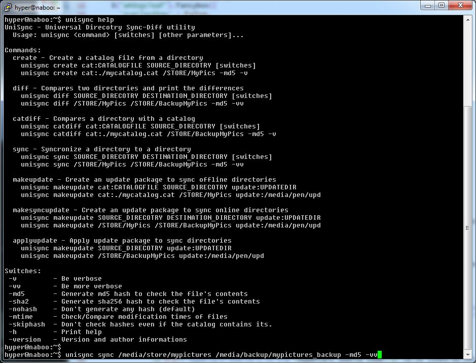
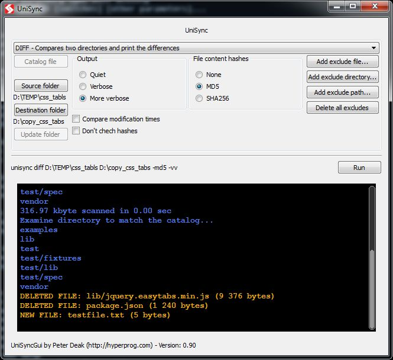

UniSync
UniSync is an open-source File synchronization program for Linux and Windows.
It is an open source utility for efficiently comparing or synchronizing large directory structures
by checking names and sizes or optionally the times or even the contents by hashes.
(Md5 or Sha-2)
The UniSync can even synchronize offline directories (Which are not available same time)
by creating a catalog file and making and update package according to that.
Unisync itself is a command line utility which usable by scripts or batch files. For ones who prefers Graphical user interface (GUI) the UniSyncGui is also available which is a graphical front end for UniSync.
Unisync in console:

Use cases, syntax
The command line syntax of unisync looks like this way:
unisync <COMMAND> [SOURCE] [DESTINATION] [cat:CATALOGFILE] [switches]
The available commands:
create- Creates a catalog file according to the content of a directory.diff- Show differences between two (currently available) directory.sync- Scan differences and sync two (currently available) directory.makeupdate- Creates an update package which contains the differences of a currently available directory to a previously scanned catalog file.makesyncupdate- Creates an update package which contains the differences of two currently available directory.applyupdate- Apply an update package (generated bymakeupdateormakesyncupdate) which makes the target directory structure same as the source of the update.
The UniSyncGui graphical frontend always show the parameters of the unisync (console command)
so you can use it to learn how to build your command line string.
Search the differences of two directory structure (diff)
Checks the directories, file sizes, modification times or file hashes. Compares two (same time available) directory contents.
Syntax:
unisync diff <source> <destination> [-mtime] [-md5|-sha2|-nohash] [-v|-vv]
| modifier | Describe |
|---|---|
-mtime | Check file modification times (Disabled by default) |
-md5 -sha2 | Use hash to compare file contents |
-nohash | Do not scan file contents (default) |
-exclf=EXF -excld=EXD -exclp=EXP | Exclude file named EXF, directory named EXD or path matched EXP from every work |
-v -vv | Be verbose, or extra verbose |
Example 1:
Compare "/media/STORE/mydata" to "/media/BACKUP/mydata" and match the file contents by sha2 hash, while be moderate verbose.
unisync diff /media/STORE/mydata /media/BACKUP/mydata -sha2 -v
Example 2:
Compare "D:\MyPics" to "X:\MyPics Backup" and match the files by name, size and modification times, while be extra verbose.(-vv) Skip the "Thumbs.db" files.
unisync diff D:\MyPics "X:\MyPics Backup" -exclf=Thumbs.db -mtime -vv
Synchronize two directory structure (sync)
Synchronize directory contents.
Syntax:
unisync sync <source> <destination> [-mtime] [-md5|-sha2|-nohash] [-std] [-v|-vv] [-i]
| modifier | Describe |
|---|---|
-mtime | Check file modification times (Disabled by default) |
-md5 -sha2 | Use hash to scan file contents |
-nohash | Do not scan file contents (default) |
-v -vv | Be verbose, or extra verbose |
-std | Use standard posix copy functions instead of platform depend faster copy. (Disabled by default) |
-i | Enable interactive/paranoid mode. The program scans the differences and prints a small statistic about the required actions, than ask you really want to synchronize. |
-exclf=EXF -excld=EXD -exclp=EXP | Exclude file named EXF, directory named EXD or path matched EXP from every work |
Example 3:
Synchronize "/media/STORE/mydata" to "/media/BACKUP/mydata" by checks the names, file sizes and md5 hashes.
Fix the modification time if the files looks same by hash.
(Files have same path, name, size, hash but modification time, the unisync set the
source file modification time to the target file)
unisync sync /media/STORE/mydata /media/BACKUP/mydata -fixtime
Example 4:
Synchronize "D:\MyPics" to "X:\MyPics Backup" and match the files by name, size.
Be verbose(-v), and interactive (-i) which means that the program shows a small aggregate
info about the needed changes to synchronize and ask you before do real changes.
unisync sync D:\MyPics "X:\MyPics Backup" -sha2 -v -i
Example 5:
Synhronize of "D:\Works" and "X:\BackupWorks" with SHA256 hashes, excluded .git directories and be extra verbose.
unisync sync D:\Works X:\BackupWorks -sha2 -excld=".git" -vv"
Creating incremental backup of a directory structure
Because the unisync can generate an update package from a directory structure according to a catalog file it can be used to generate incremental backup of a directory tree. The only necessary thing you have to do is to create a catalog with unisync when the full backup is archived. Later the unisync can compare the data matching to the live data and create a directory as incremental backup. You can do these tasks from cron (on Linux) or Scheduled Tasks (on Windows).
Syntax:
# To create a catalog when full backup is archived
unisync create cat:<catalogfile> <destination> [-md5|-sha2|-nohash|-mtime] [-v|-vv]
# To create incremental backup according to the catalog
unisync makeupdate <source> cat:<catalogfile> update:<updatepackage> [-md5|-sha2|-nohash|-mtime] [-std] [-skiphash] [-v|-vv]
# On restore: pathing full backup with the incremental pack
unisync appyupdate update:<updatepackage> <destination> [-std] [-v|-vv]
| modifier | Describe |
|---|---|
-mtime | Check file modification times (Disabled by default) |
-md5 -sha2 | Use hash to scan file contents |
-nohash | Do not scan file contents (default) |
-skiphash | Do not compare hashes though exists in catalog file |
-std | Use standard posix copy functions instead of platform depend faster copy. (Disabled by default) |
-exclf=EXF -excld=EXD -exclp=EXP | Exclude file named EXF, directory named EXD or path matched EXP from every work |
-v -vv | Be verbose, or extra verbose |
Example 6:
The automatic incremental backup of the computer's "/mydata" works the following way:
When a full backup is done from "/mydata" to "/backups/full_on_20171001" create a catalog from this state:
unisync create /mydata cat:/store/onfullbkp.usc -mtime -nohash -v
To create an incremental backup run the following command. The location of the incremental backup is the "/backups/incr_on_20171010" (This directory must be created before):
unisync makeupdate /mydata cat:/store/onfullbkp.usc update:/backups/incr_on_20171010 -v -skiphash -mtime
In case of a full restore you can use the incremental backup this way:
# After restoring full backup from /backups/full_on_20171001 to /mydata
unisync applyupdate /mydata update:/backups/incr_on_20171010 -vv
Note 1: The unisync makeupdate will generate the incremental backup from that time when the catalog was created. In the example no.6 all incremental packages will containing every changes after the full backup. (The second increment will contains every updates present in the first increment. The other way on case of failure only one incremental restore is needed) If you want to use incremental backups chained you have to re-generate the catalog file every time after the "unisync makeupdate..."
Note 2: In the example no.6 we use a catalog file to generate the incremental data so this method can be used when the full backup is not available in time of incremental backup is created. In a different scenario when the full backup is available you can use the "unisync makesyncupdate" to create the incremental backup. That case the catalog creation is unnecessary.
Offline synchronize two directory structures
The unisync can synchronize two directories which can't available same time. It makes a catalog from the OLD directory structure. After that you have to transfer somehow this small catalog file to the second place where the NEW directory structure is located, and generate an "update package" by unisync. After you bring back the update package somehow to the OLD directory's machine, the unisync can apply this update. This way you can synchronize two different located same time not available directories with big amount of data. Of course the "update package" contains the modified and new files only.
Syntax:
unisync create cat:<catalogfile> <destination> [-md5|-sha2|-nohash] [-v|-vv]
unisync makeupdate <source> cat:<catalogfile> update:<updatepackage> [-md5|-sha2|-nohash] [-std] [-skiphash] [-v|-vv]
unisync appyupdate update:<updatepackage> <destination> [-std] [-v|-vv]
| modifier | Describe |
|---|---|
-md5 -sha2 | Use hash to scan file contents |
-nohash | Do not scan file contents (default) |
-skiphash | Do not compare hashes though exists in catalog file |
-std | Use standard posix copy functions instead of platform depend faster copy. (Disabled by default) |
-exclf=EXF -excld=EXD -exclp=EXP | Exclude file named EXF, directory named EXD or path matched EXP from every work |
-v -vv | Be verbose, or extra verbose |
Example 7:
Syncronize the B computer's "/backupmydata" to A computer's "/mydata" offline. (for example using a pen drive)
#On computer B we create a catalog
unisync create /backupmydata cat:/media/pen/catalog.usc -v
#On computer A we make an update package
unisync makeupdate /mydata cat:/media/pen/catalog.usc update:/media/pen/update_mydata -v
#On computer B we apply the update package
unisync applyupdate /backupmydata update:/media/pen/update_mydata -vv
Offline compare two directory structure
By using unisync catalog file you can compare two directory structure which not available same time.
Syntax:
unisync create cat:<catalogfile> <source> [-md5|-sha2|-nohash] [-v|-vv]
unisync catdiff cat:<catalogfile> <destination> [-skiphash] [-v|-vv]
| modifier | Describe |
|---|---|
-md5 -sha2 | Use hash to scan file contents |
-nohash | Do not scan file contents (default) |
-skiphash | Do not compare hashes though exists in catalog file |
-exclf=EXF -excld=EXD -exclp=EXP | Exclude file named EXF, directory named EXD or path matched EXP from every work |
-v -vv | Be verbose, or extra verbose |
Example 7:
Make a catalog (with md5) from A computer's /mydata and compare its to B computer's /mydata and
print the differences, extra verbose.
#On computer A
unisync create /mydata cat:/media/pen/catalog.usc -md5 -vv
#On computer B
unisync catdiff cat:/media/pen/catalog.usc /mydata -vv
Algorithm
By default unisync determines which files differ by checking the path, name and the size of each file.
If the "-mtime" switch is present the modification time is also relevant.
If the "-sha2" or "-md5" switch is specified the program calculates the appropriate
hash value of the file and compare it.
Because the unisync's primary goal was synchronize offline directories the full byte-per-byte compare is not available.
In case of synchronization all modified file is fully copied, the program can't do partial copy,
in the other side uses platform specific copy functions by default to speed up copy. (Both on windows and linux)
UniSync GUI
The UniSyncGUI is a Qt based multi platform graphical front end to unisync command.
UniSync Gui (Uses unisync console in background):

External links
Author
Written by Péter Deák, under license of General Public License v2. The development started in 2014 and continues by the original author.